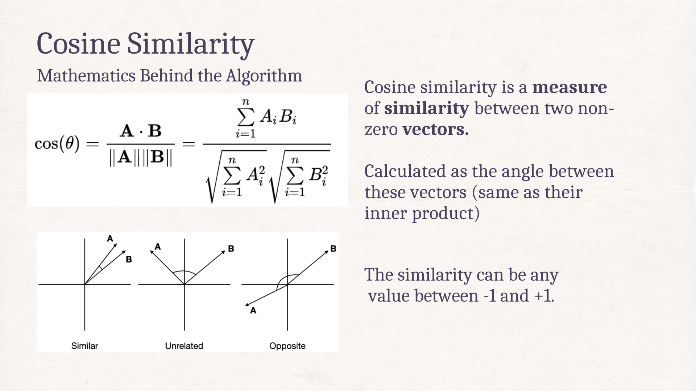
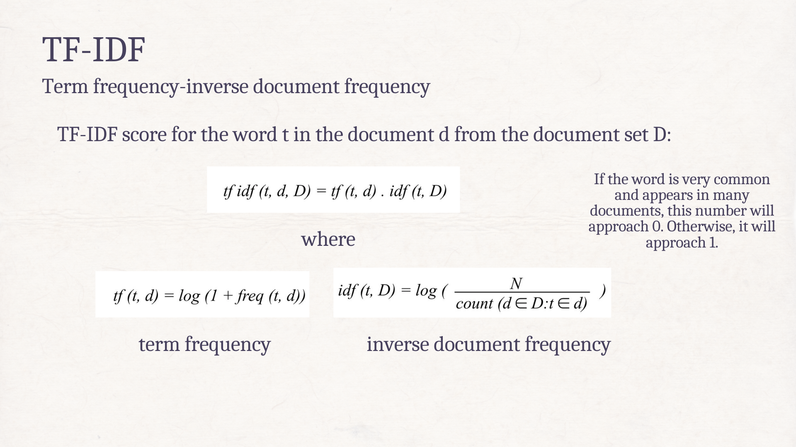
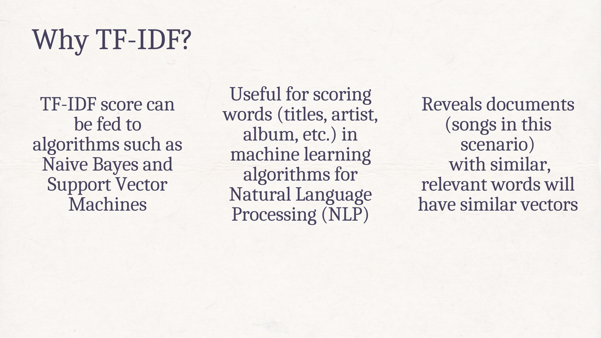

Spot-Suggest
Objective:
To create a selection of music suggestions based on a user's playlist, based on several musical metrics such as key, valence and tempo. Using the cosine similarity calculations & vectorized data to train the model, it returns 40 songs that are mathematically closest to the given playlist.
Tools Utilized:
Programmed in python, using the pandas, numpy, sklearn, matplotlib and spotipy libraries. Training was conducted using cosine similarity functions from the sklearn libaries, which computes similarity as the normalized dot product of X and Y. Dataset retrieved using the Spotify API.


